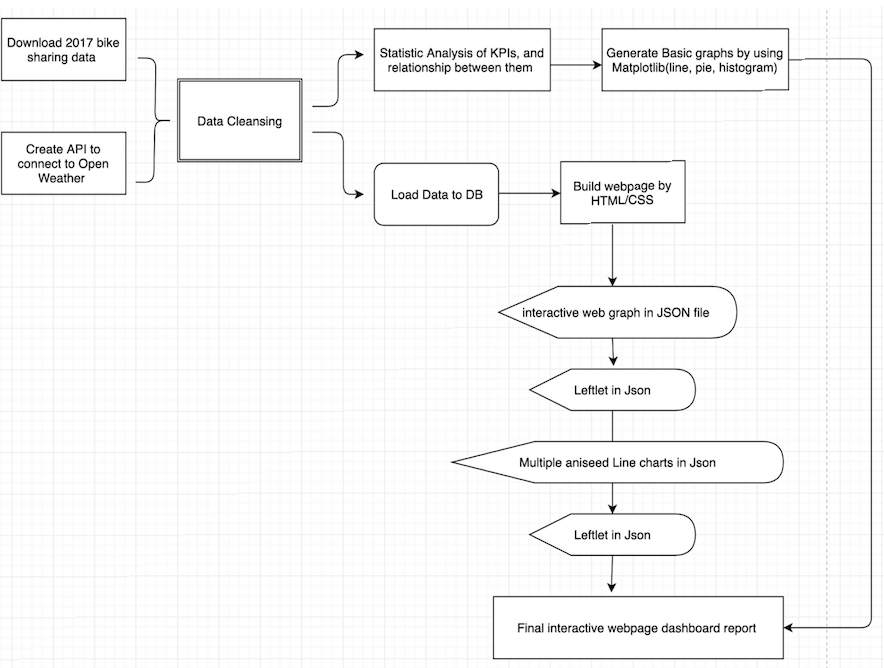

Bike Share Toronto Expanson
Biek Share Toronto announced that due to the incredible popularity of Bike Share Toronto we are expanding our current footprint to add 70 new stations and 700 new bikes! .

It's Greener
As we know that Bike sharing system not only convience for our daily life, but also frendly to our envriment.

More and more Bike Share Locations in Toronto
If you are looking for a fun trip, the bike sharing makes navigating Toronto on two wheels convenient, flexible and fun!
Project of Exploring Toronto Bike Share Ridership in 2017

Statistic analysis by SQL and Python
Perform ETL by utilizing Python, displaed data through DataFrame and statistical analysis of different KPIs to understand data.

D3 Interative Graphs
This part we built interactive graphs by utlizing D3.js technique to see the relationship bettween bike ride and weather status.

Leflet.js Mapping
We build a map of Toronto bike sharing stations in 2017, added several layers and maps on it to make it to improve user experiences.
Project Work Flow Diagram

Introduction of Project
Team Members:
Grace Ming, Belinda Liang, Lucy Wo, Sharon (Xueying Liu), Hannah (Jiangyuan Chu)Objective:
Understand and analyze Toronto Bike Sharing status in 2017; how people use bike share; The relationship between user type, trip duration and distance.Background:
Nowadays, bike sharing is getting popular. Biking is an enjoyable, environmental and a cost-effective way to get around town while avoiding traffic, subway delays and taxi fares in Toronto. More and more people are using shared rides for their daily work, life and even sightseeing. It’s also convenient for us to return the bike to any docking station when you finish using it.
So it is a meaningful topic for us to understand and analyze Toronto Bike Sharing status, how people use shared bikes such as the relationship between user type, trip duration and distance.
View more informations:
GitHub Link
P: (123) 456-7890